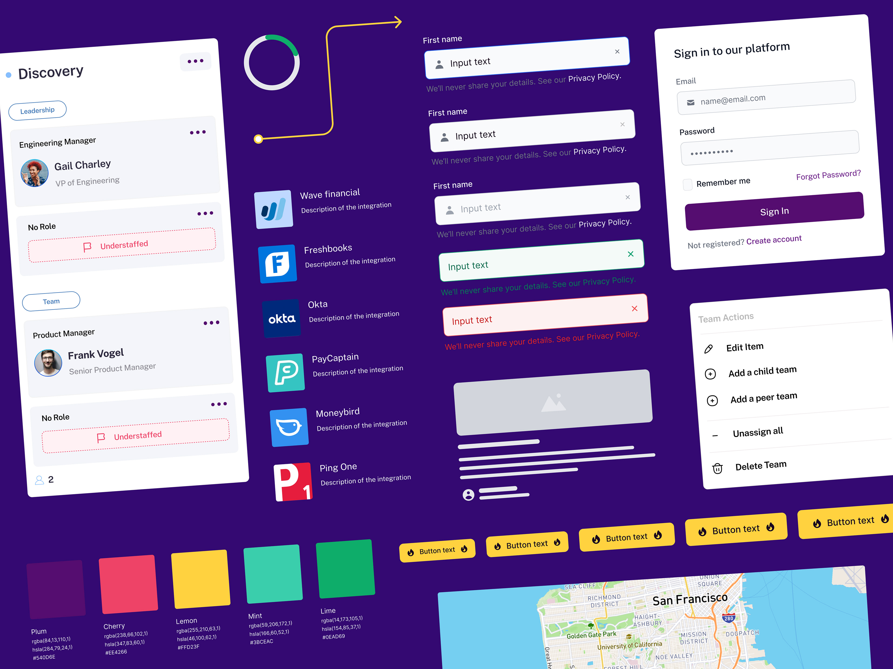

03
Orgspace
Built a comprehensive design system from scratch in 3 months, leveraging modern tools like Figma, Tailwind, and Storybook to create a scalable and efficient development workflow.
The Challenge
Orgspace needed a modern design system that could scale with their rapid growth while maintaining consistency across their product suite. The challenge was to create this system within a tight three-month timeline while ensuring it would be easy for both designers and developers to adopt.
The Approach
We implemented a modern tech stack and methodology:
- Figma for design and component creation
- Tailwind CSS for utility-first styling
- Storybook for component documentation and testing
- Git-based workflow for version control
Key Features
The design system includes:
- Responsive component library
- Dark/light theme support
- Accessibility-first components
- Interactive documentation
- Auto-generated style guide
Impact
The implementation resulted in:
- 50% faster component development time
- Consistent UI across all products
- Improved designer-developer collaboration
- Reduced design debt and maintenance costs
Technologies Used
- Figma
- Tailwind CSS
- Storybook
- React
- TypeScript